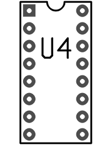

{kind=link}
PCB is an interactive printed circuit board editor for Unix, Linux, Windows, and Mac systems. PCB includes a rats nest feature and schematic/netlist import, design rule checking, and can provide industry standard RS-274X (Gerber), NC drill, and centroid data (X-Y data) output for use in the board fabrication and assembly process, as well as photorealistic and design review images. PCB offers high end features such as an autorouter and trace optimizer which can tremendously reduce layout time. For custom requirements, PCB offers a plug-in API for inserting new functionality and using that functionality from within the GUI as well as in scripts.
Recent News
- pcb-4.0.2 release available
- pcb-4.0.1 release available
- pcb-4.0.0 release available
- pcb-20140316 snapshot available
- Main gEDA/PCB web sites moved to geda-project.org
- pcb-20110918 snapshot available
- pcb-20100929 snapshot available
- pcb-20091103 snapshot available
- Main PCB web site moved to gpleda.org
- [more]
Getting Help
PCB shares the gEDA community's mailing lists and IRC channel. Please obey The gEDA Project Code of Conduct on these forums.
Reporting Bugs
Please use The PCB Launchpad Tracker.
Installing From Source
To install an official release from source, use the standard "./configure; make; make install" commands. The sources offer three GUIs: GTK (the default), Lesstif, or Batch. Use --with-gui=lesstif or --with-gui=batch to switch. The batch GUI is suitable for scripting-only applications. See the file INSTALL for more details.
To install from GIT, you must first run "./autogen.sh", then follow the above directions.
git clone git://git.geda-project.org/pcb.git
Pre-Built Binaries
Many Unix-like distributions have their own mechanisms for installing pre-built binaries, please check your existing or add-on repositories for PCB binaries.
Windows Binaries
To more easily comply with the GPL and other copyrights, the Windows installers are stored on a separate site with sufficient space to hold the sources for all the runtime libraries that are required for the Windows port of PCB. Currently, the site is:
http://www.delorie.com/pcb/geda-windows/Please see that site for windows-specific installation instructions.

|